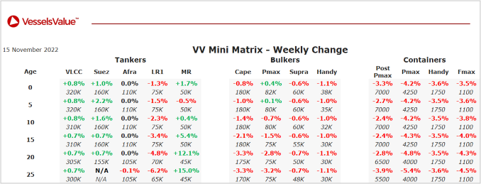

inWeekly Vessel Valuations Report16/11/2022

Bulkers:Bulker values have softened
Capesize Navios Obeliks (181,400 DWT, Jun 2012, Koyo Dock) sold to Seanergy Maritime Corp for USD 29.50 mil, VV Value USD 31.47 mil – Poor condition
Capesize HL Shinboryeong (179,300 DWT, May 2010, Hyundai Samho Heavy Ind) sold to undisclosed buyers for USD 24.80 mil, VV Value USD 26.65 mil – BWTS fitted
Panamax Key Light (83,000 DWT, Dec 2012, Sanoyas) sold to unknown Japanese buyers for USD 23.00 mil, VV Value USD 23.20 mil – BWTS fitted
Panamax Ocean Rosemary (82,300 DWT, Apr 2013, Dalian Shipbuilding Industry Corp) sold to Capital Ship Management for USD 21.00 mil, VV Value USD 22.10 mil – DD Passed.
Supramax Worldera 6 (52,300 DWT, Dec 2005, Tsuneishi Cebu) sold to unknown Chinese buyers for USD 12.50 mil, VV Value USD 12.78 mil – BWTS fitted.
Handy BC Trudy (30,800 DWT, Nov 2009, Jiangsu Eastern) sold to unknown Swedish buyers for USD 12.50 mil, VV Value USD 11.76 mil – DD Passed.
Handy BC Belle Etoile (28,200 DWT, Oct 2014, I-S) sold to undisclosed buyers for USD 14.00 mil, VV Value USD 15.00 mil – DD Passed.
Tankers:Tanker values have remained stable
LR2 Hull 510 (115,000 DWT, Sep 2023, Hyundai Vietnam Shipbuilding) sold to Nereus Shipping for USD 75.00 mil, VV Value USD 72.80 mil – Resale.
LR1 Nordic Tristan (73,600 DWT, Mar 2007, New Times Shipbuilding) sold to undisclosed buyers for USD 21.00 mil, VV Value USD 19.83 mil – BWTS fitted.
Small Chemical Tankers MTM Tokyo (20,900 DWT, Jan 2003, Kitanihon Zosen) and MTM Fairfield (20,500 DWT, Sep 2002, Fukuoka) sold En Bloc to undisclosed buyers for USD 22 mil, VV Value USD 21.58 mil. – En Bloc
Containers:Container values have softened
No reported sales this week.
